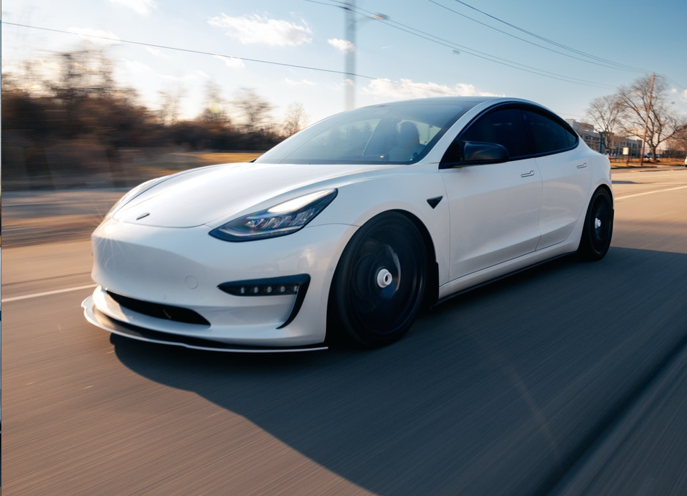

Tesla არის ამერიკული საავტომობილო და სუფთა ენერგიის კომპანია, რომელიც დაფუძნებულია ოსტინში, ტეხასის შტატში. Tesla აპროექტებს და აწარმოებს ელექტრო მანქანებს (ელექტრო მანქანებს და სატვირთო მანქანებს), ბატარეის ენერგიის შენახვას სახლიდან ქსელამდე, მზის პანელებსა და მზის სახურავის ფილებს და მათთან დაკავშირებულ პროდუქტებსა და სერვისებს. ძრავები. კომპანიის სახელი არის გამომგონებლისა და ელექტრო ინჟინრის ნიკოლა ტესლას პატივი. 2004 წლის თებერვალში, 6,5 მილიონი დოლარის ინვესტიციით, ელონ მასკი გახდა კომპანიის უმსხვილესი აქციონერი. ის აღმასრულებელი დირექტორის თანამდებობას 2008 წლიდან ასრულებდა. მასკის თქმით, ტესლას მიზანია დაეხმაროს დაჩქარდეს სვლა მდგრად ტრანსპორტსა და ენერგიაზე, რომელიც მიიღება ელექტრო მანქანებისა და მზის ენერგიის საშუალებით. ტესლამ თავისი პირველი მანქანის მოდელის, Roadster სპორტული მანქანის წარმოება 2009 წელს დაიწყო.